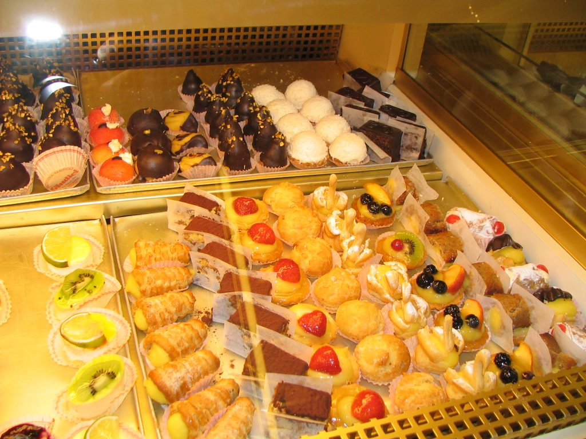
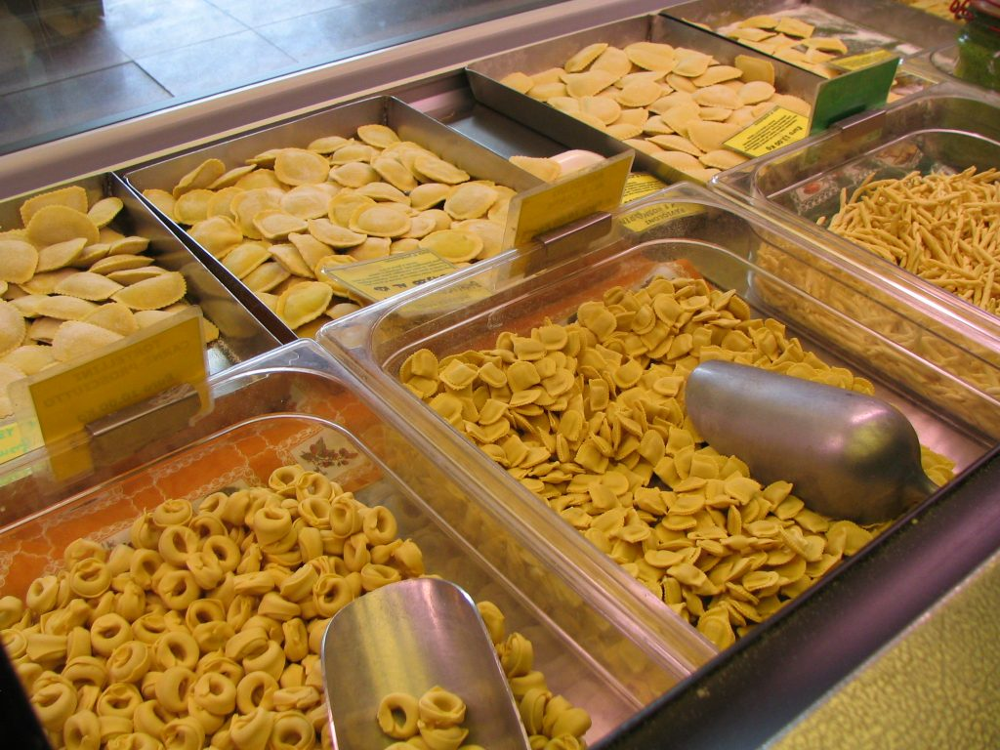

Italian pastries
Pasticceria is a store specializing in sweets (dolci). It sells mainly pastry products, cookies, chocolate, and candies. Italian pastries aren't usually as rich or big as the American ones; many of them can be eaten in one or two bites. Many pasticcerie have a coffee bar. So, what's the name of the store that sells pasta? That's the pastificio which is a fresh pasta shop and which sells many different kinds of pasta along with tortellini, ravioli, gnocchi, and other products to take away and cook (cucinare) at home.
Tortellini, ravioli and pasta sold in a pastificio
{This is an excerpt from chapter 5 “Stores” of the eBook “Italy from the Inside. A native Italian reveals the secrets of traveling in Italy”. Buy our eBook on Amazon and leave us a review! If it’s good, you’ll make us happy, if it’s bad, you’ll make us improve. Thank you either way!}